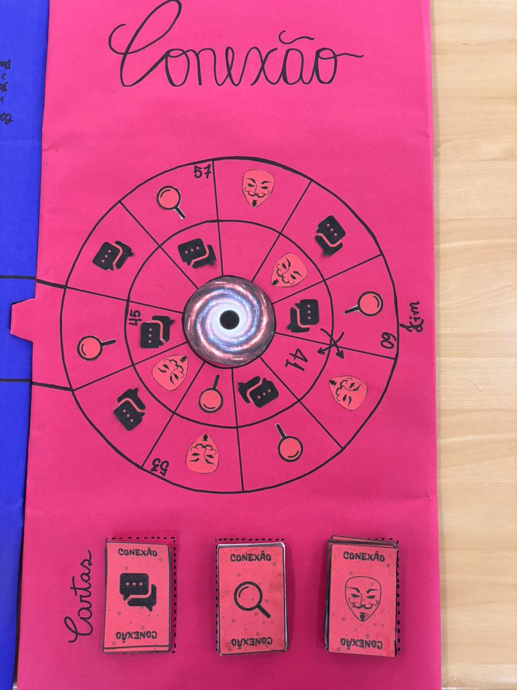
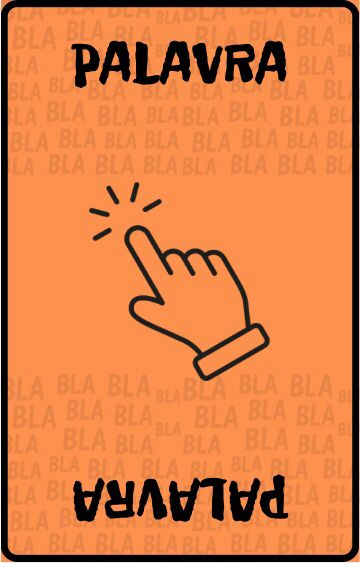
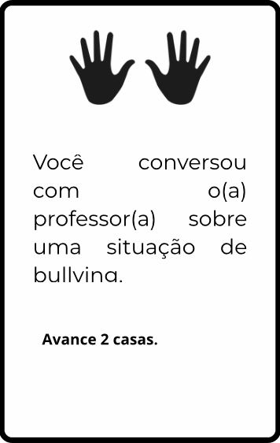
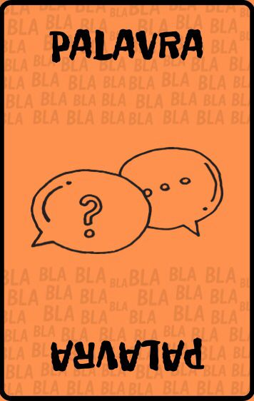
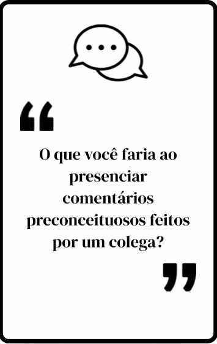

BULLYING VERBAL
O bullying, em sua forma geral, é definido como uma intimidação constante - repetitiva - e uma violência continuada, de aspecto físico e/ou psicológico, que tem como objetivo prejudicar alguém que está indefeso e vulnerável. Sendo assim, o bullying verbal é abordado nesta fase com o objetivo de identificar o que o caracteriza, suas formas de manifestação e consequências.
O objetivo dos coordenadores do jogo é contribuir para que os participantes compreendam que o bullying verbal é nocivo e prejudicial. Objetiva-se, além disso, ajudar os envolvidos a reconhecer que muitas vezes essas ações ocorrem disfarçadas de brincadeiras ou apelidos, o que impede os alunos de perceberem o dano que podem causar ao outro.
A divisão dos participantes
Para iniciar esta fase do jogo, os participantes deverão estar separados em grupos.
Tabuleiro do Jogo

Regras do jogo
-
Tabuleiros e Duração
O jogo é realizado em um tabuleiro único e infinito, organizado de forma que as casas podem ser repetidas pelos grupos. O fim do jogo é determinado pelo tempo disponível definido.
-
Início da Partida
Os grupos começam na primeira casa (espaço um), onde a primeira atividade é discutir em grupo e formular uma resposta para a pergunta: "o que é o bullying verbal?", a partir da resposta para esse questionamento feita por todos os grupos é possível andar a quantidade de casas determinadas pelo lançamento do dado.
-
Movimentação
O percurso no tabuleiro é feito através do lançamento de um dado. A cada rodada, cada grupo escolhe um integrante diferente para jogar o dado estimulando a participação e construção coletiva.
-
Tipos de Casas e Cartas
Durante o percurso, há dois tipos de casas e, consequentemente, dois tipos de cartas: Cartas-Verbais e Cartas-Ação.
-
Cartas Verbais
-
Subtipo Situacional: Expõe uma situação de bullying verbal e o grupo deve
formular uma reação a essa situação. Propõe a discussão coletiva para a resolução de
conflitos em situações hipotéticas.
Exemplo: "Um colega está chamando o outro por apelidos ofensivos. Qual seria a reação correta neste momento?"
-
Subtipo de Questionamento: O grupo recebe uma questão e deve formular uma
resposta em grupo.
Exemplo: "Quando alguém faz bullying com você ou com seu amigo o que deve ser feito nesta situação?"
- Consequência: De acordo com as respostas, o grupo avança a quantidade de casas previstas na carta ou permanece no mesmo lugar.
-
Subtipo Situacional: Expõe uma situação de bullying verbal e o grupo deve
formular uma reação a essa situação. Propõe a discussão coletiva para a resolução de
conflitos em situações hipotéticas.
-
Cartas-Ação
Apresentam indicações de práticas a serem realizadas no jogo.
-
Vantajosas: Indicam que o jogador pode ter uma vantagem, como avançar
algumas casas.
Exemplo: "Você presenciou e falou para a professora sobre um colega estar praticando o bullying verbal. Avance duas casas!"
-
Desvantajosas: Indicam uma penalidade por uma atitude inadequada.
Exemplo: "Seu colega insultou o outro e você riu ao invés de ajudar a impedir que a situação continue. Volte duas casas ou fique uma rodada sem jogar"
-
Vantajosas: Indicam que o jogador pode ter uma vantagem, como avançar
algumas casas.
-
Pontuação extra
Antes do jogo, é apresentada a lista de itens com práticas que serão recompensadas (por exemplo, espírito de equipe e participação) ou penalizadas (por exemplo, desrespeito com os times adversários ou excesso de barulho).
Tipos de Cartas
Carta Verbal


Carta Ação


Encerramento da fase
O jogo se encerra quando o tempo disponível acabar, e a equipe com mais voltas no tabuleiro é declarada a campeã da primeira fase.